EFT po toksycznym związku
Program 21-dniowy na odbudowę siebie
O autorce
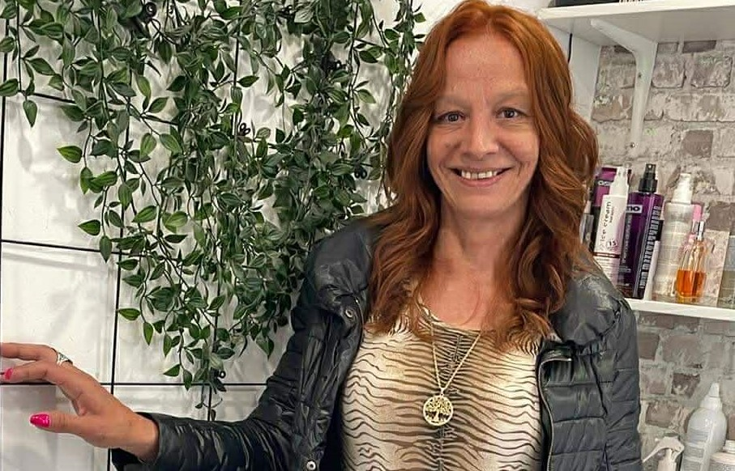
Magdalena Iskra
Jestem terapeutką pracującą z osobami po doświadczeniach trudnych i toksycznych relacji. W swojej pracy wykorzystuję podejście EFT (Emotionally Focused Therapy), koncentrując się na regulacji emocji, przywiązaniu oraz odbudowie poczucia bezpieczeństwa po relacjach, które naruszyły granice i tożsamość.
Tematem toksycznych związków zajmuję się zarówno zawodowo, jak i z perspektywy osobistej. Własne doświadczenia sprawiły, że szczególną uwagę przykładam do pracy bez uproszczeń, bez obwiniania i bez obietnic szybkich rozwiązań.
Ten eBook powstał jako uzupełnienie pracy terapeutycznej oraz wsparcie dla osób, które są na etapie porządkowania emocji, rozumienia mechanizmów relacyjnych i odzyskiwania kontaktu ze sobą po trudnym związku.
Moim celem nie jest „naprawianie relacji”, lecz pomoc w odzyskaniu wewnętrznej stabilności i zdolności do tworzenia bezpiecznych więzi — najpierw z samą/samym sobą.
EFT po toksycznym związku
Program 21-dniowy na odbudowę siebie
Prawa autorskie
© 2026 Magdalena Iskra. Wszelkie prawa zastrzeżone.
Żadna część tej publikacji nie może być powielana, rozpowszechniana ani przekazywana w jakiejkolwiek formie i w jakikolwiek sposób, w tym elektroniczny, mechaniczny, poprzez fotokopiowanie, nagrywanie lub inny, bez uprzedniej pisemnej zgody autorki, z wyjątkiem krótkich cytatów w recenzjach i niektórych innych niekomercyjnych zastosowań dozwolonych przez prawo autorskie.
Ważne informacje i zastrzeżenia (Disclaimer)
⚠️ Uwaga
Treści zawarte w tym ebooku mają charakter wyłącznie informacyjny i edukacyjny. Nie stanowią one porady medycznej, psychologicznej ani terapeutycznej i nie mogą zastąpić profesjonalnej konsultacji ze specjalistą – lekarzem, psychologiem, psychoterapeutą lub psychiatrą.
Autorka dołożyła wszelkich starań, aby informacje zawarte w tej publikacji były rzetelne i zgodne z aktualną wiedzą, jednak nie ponosi odpowiedzialności za jakiekolwiek decyzje podjęte na ich podstawie ani za ich ewentualne skutki.
Korzystanie z przedstawionych technik i metod odbywa się na własną odpowiedzialność czytelnika.
Kiedy NIE korzystać z tego programu i gdzie szukać pomocy
⚠️ Bezpieczeństwo
Ten program nie jest dla Ciebie, jeśli znajdujesz się w jednej z poniższych sytuacji. W takich przypadkach konieczne jest natychmiastowe skontaktowanie się z profesjonalnym wsparciem.
Program nie jest odpowiedni, gdy:
- Przeżywasz obecnie głęboki kryzys psychiczny, masz myśli samobójcze lub samookaleczające
- Cierpisz na ciężkie zaburzenia psychiczne, takie jak schizofrenia, choroba afektywna dwubiegunowa w fazie manii, czy głęboka depresja wymagająca natychmiastowej interwencji medycznej
- Jesteś w trakcie terapii traumy – przed rozpoczęciem tego programu skonsultuj się ze swoim terapeutą
- Czujesz, że praca z emocjami jest dla Ciebie zbyt przytłaczająca i nie masz wsparcia bliskich osób lub specjalisty
W sytuacjach kryzysowych, natychmiast skontaktuj się z:
📞 Telefon zaufania dla osób dorosłych w kryzysie emocjonalnym: 116 123 (czynny codziennie od 14:00 do 22:00)
📞 Telefon zaufania dla dzieci i młodzieży: 116 111 (czynny całą dobę)
🏥 Najbliższy Ośrodek Interwencji Kryzysowej (OIK) lub Izba Przyjęć najbliższego szpitala psychiatrycznego
Do kogo jest ten ebook, a do kogo nie
✅ Ten ebook jest dla Ciebie, jeśli:
- Zakończyłaś lub zakończyłeś toksyczny, trudny lub przemocowy związek i chcesz odzyskać równowagę emocjonalną
- Masz trudności z uwolnieniem się od myśli o byłym partnerze lub partnerce
- Doświadczasz wahań nastroju, lęku, poczucia winy, wstydu lub złości, które utrudniają Ci codzienne funkcjonowanie
- Chcesz zrozumieć, co się stało i dlaczego tak trudno jest Ci ruszyć naprzód
- Jesteś gotowa lub gotowy na pracę z własnymi emocjami w bezpieczny i ustrukturyzowany sposób
- Szukasz praktycznych narzędzi do samoregulacji i odbudowy poczucia własnej wartości
❌ Ten ebook nie jest dla Ciebie, jeśli:
- Oczekujesz magicznego rozwiązania, które zadziała bez Twojego zaangażowania i systematycznej pracy
- Nie jesteś gotowa lub gotowy na konfrontację z trudnymi emocjami
- Szukasz diagnozy medycznej lub zastępujesz tym programem profesjonalną psychoterapię (pamiętaj, ten ebook to program samopomocowy, który może wspierać, ale nie zastępuje pracy z terapeutą)
Czym jest EFT i dlaczego działa przy traumie relacyjnej
EFT (Emotional Freedom Techniques), czyli Techniki Emocjonalnej Wolności, to metoda należąca do nurtu psychologii energetycznej. Łączy w sobie elementy medycyny chińskiej, konkretnie stymulację punktów akupunkturowych, z nowoczesną psychologią, która wykorzystuje ekspozycję na trudne wspomnienia i emocje w bezpiecznych, kontrolowanych warunkach.
Podczas sesji EFT koncentrujesz się na konkretnym problemie emocjonalnym lub fizycznym, jednocześnie opukując opuszkami palców określone punkty na ciele. Ta stymulacja wysyła do mózgu sygnały uspokajające, które pomagają zredukować reakcję stresową i przetworzyć zablokowane emocje. Metoda ta została zbadana w licznych badaniach naukowych i wykazała skuteczność w redukcji lęku, stresu pourazowego i objawów depresji.
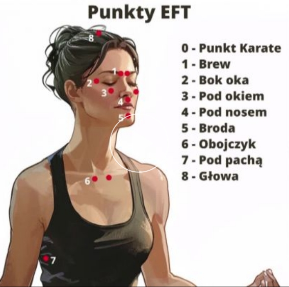
Dlaczego EFT jest skuteczne w przypadku traumy relacyjnej?
Toksyczny związek to forma chronicznego stresu, która głęboko zaburza funkcjonowanie naszego układu nerwowego. Prowadzi to do powstania tzw. traumy relacyjnej i więzi traumatycznej. EFT, poprzez pracę z ciałem i umysłem jednocześnie, pozwala na:
- Dezaktywację reakcji alarmowej w ciele migdałowatym, który jest ośrodkiem strachu w mózgu
- Regulację pobudzonego układu nerwowego i przywrócenie poczucia bezpieczeństwa
- Przetworzenie bolesnych wspomnień i zmniejszenie ich ładunku emocjonalnego
- Zmianę negatywnych przekonań na swój temat, które powstały w wyniku toksycznej relacji
Co ten program robi, a czego nie obiecuje
✅ Co ten program robi:
- Dostarcza ustrukturyzowany, 21-dniowy plan pracy z emocjami po toksycznym związku
- Uczy praktycznych technik samoregulacji, które możesz stosować samodzielnie w dowolnym momencie
- Pomaga zrozumieć mechanizmy traumy relacyjnej i więzi traumatycznej z perspektywy neurobiologicznej
- Wspiera w odbudowie poczucia własnej wartości i autonomii emocjonalnej
- Prowadzi krok po kroku przez proces uwalniania się od złości, lęku, poczucia winy i wstydu, które często towarzyszą po zakończeniu toksycznego związku
❌ Czego ten program nie obiecuje:
- Nie obiecuje, że po 21 dniach wszystkie Twoje problemy znikną. Proces zdrowienia jest indywidualny i często wymaga więcej czasu, cierpliwości i systematycznej pracy
- Nie zastąpi profesjonalnej psychoterapii, zwłaszcza w przypadku głębokiej traumy złożonej (C-PTSD) lub współwystępujących zaburzeń psychicznych
- Nie gwarantuje, że już nigdy nie poczujesz bólu czy tęsknoty. Celem jest nauczenie się, jak sobie z tymi uczuciami radzić w zdrowy sposób, a nie ich całkowite wyeliminowanie
Jak korzystać z ebooka, nagrań audio i kart pracy
Ten program składa się z trzech głównych elementów, które wzajemnie się uzupełniają i tworzą kompleksowe narzędzie do pracy z emocjami.
📘 Ebook
Stanowi bazę teoretyczną i przewodnik po całym procesie. Każdy dzień programu zawiera "Tekst dnia" do przeczytania oraz szczegółową instrukcję sesji EFT z konkretnymi formułami do opukiwania.
🎧 Nagrania audio
To prowadzone sesje EFT i medytacje, które ułatwiają pracę z emocjami. Znajdziesz w nich wsparcie i prowadzenie, zwłaszcza na początku swojej drogi, gdy technika może wydawać się nowa i nieznana.
📋 Karty pracy (A, B, C)
To narzędzia do pogłębionej refleksji i monitorowania postępów. Pomagają zidentyfikować kluczowe problemy, nazwać emocje i zaplanować dalsze kroki w procesie zdrowienia.
Sugerowany schemat pracy:
- Rano: Przeczytaj "Tekst dnia" i wykonaj sesję EFT, korzystając z instrukcji w ebooku lub dedykowanego nagrania audio
- W ciągu dnia: Wracaj do kart pracy, jeśli poczujesz taką potrzebę. Noś je przy sobie lub miej do nich łatwy dostęp w telefonie
Toksyczny związek a układ nerwowy
Życie w toksycznym związku to stan ciągłego zagrożenia dla organizmu. Twój układ nerwowy, który ewolucyjnie został zaprojektowany do radzenia sobie z krótkotrwałym stresem, zostaje przestawiony w tryb permanentnej gotowości. Dominującą rolę przejmuje współczulny układ nerwowy, odpowiedzialny za reakcję "walcz, uciekaj lub zamieraj".
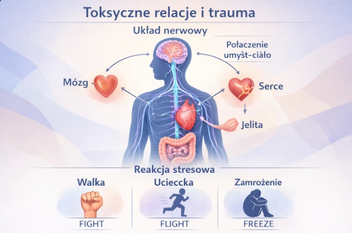
Trzy podstawowe reakcje na zagrożenie:
Reakcja walki objawia się jako ciągłe kłótnie, bronienie się, próby "naprawienia" partnera lub sytuacji.
Reakcja ucieczki to unikanie konfrontacji, wycofywanie się emocjonalne, odcinanie się od własnych potrzeb.
Reakcja zamrożenia manifestuje się jako poczucie bezradności, odrętwienie emocjonalne, dysocjacja, wrażenie "bycia poza ciałem" podczas trudnych sytuacji.
Skutki chronicznego stresu:
Ten chroniczny stres prowadzi do rozregulowania całego systemu. Poziom kortyzolu, hormonu stresu, jest stale podwyższony, co wpływa negatywnie na:
- Sen i jakość wypoczynku
- Apetyt i nawyki żywieniowe
- Odporność immunologiczną
- Zdolność do logicznego myślenia
Mózg emocjonalny, czyli układ limbiczny, przejmuje kontrolę nad mózgem racjonalnym, czyli korą przedczołową. To wyjaśnia, dlaczego w toksycznym związku i po jego zakończeniu trudno jest podejmować racjonalne decyzje i kontrolować emocje.
Trauma relacyjna i więź traumatyczna
Trauma relacyjna to rana psychiczna, która powstaje w wyniku bolesnych doświadczeń w bliskiej relacji. W przeciwieństwie do traumy "jednorazowej", takiej jak wypadek samochodowy czy klęska żywiołowa, trauma relacyjna ma charakter powtarzalny i kumulacyjny. Jej źródłem jest zdrada zaufania, upokorzenie, manipulacja, przemoc emocjonalna lub fizyczna ze strony osoby, która powinna być źródłem bezpieczeństwa i wsparcia.
Więź traumatyczna
Więź traumatyczna to silna, uzależniająca więź emocjonalna z osobą, która nas krzywdzi. Powstaje w cyklu "napięcie - eksplozja - miodowy miesiąc". Po okresie przemocy, chłodu emocjonalnego lub konfliktów następuje faza skruchy i czułości ze strony partnera.
⚠️ Mechanizm uzależnienia
Ten nieregularny, nieprzewidywalny wzorzec nagradzania działa na mózg jak narkotyk, tworząc potężne uzależnienie biochemiczne. Mózg uczy się, że po bólu może przyjść nagroda, co sprawia, że trudno jest odejść, nawet gdy racjonalnie wiemy, że związek jest destrukcyjny.
Regulacja emocji – podstawy neurobiologiczne
Regulacja emocji to zdolność do zarządzania swoimi stanami wewnętrznymi – uspokajania się, gdy jesteśmy pobudzeni, i motywowania, gdy czujemy apatię. U osób po toksycznych związkach ta zdolność jest głęboko zaburzona. Każde wspomnienie, myśl czy bodziec kojarzący się z byłym partnerem może wywołać lawinę trudnych emocji i reakcję stresową w ciele.
Neurobiologia regulacji emocji
Proces regulacji emocji zachodzi w kilku obszarach mózgu:
Kora przedczołowa, odpowiedzialna za planowanie i kontrolę impulsów, powinna hamować nadmierną aktywność ciała migdałowatego, które jest ośrodkiem strachu. W wyniku chronicznego stresu połączenia między tymi obszarami zostają osłabione, co sprawia, że reakcje emocjonalne stają się intensywniejsze i trudniejsze do kontrolowania.

Cel pracy z EFT
Celem pracy z EFT jest odbudowanie tej zdolności. Poprzez stymulację punktów meridianowych, wysyłamy do ciała migdałowatego sygnał: "Mimo że myślę o trudnej sytuacji, jestem teraz bezpieczna lub bezpieczny". To pozwala na stopniowe "odwrażliwianie" układu nerwowego na bodźce wyzwalające i przywrócenie równowagi, czyli homeostazy.
EFT – mechanizm działania i ograniczenia
Mechanizm działania EFT opiera się na kilku filarach naukowych:
🧠 Teoria poliwagalna
Teoria poliwagalna Stephena Porgesa wyjaśnia, że stymulacja nerwu błędnego poprzez opukiwanie i inne techniki aktywuje przywspółczulny układ nerwowy, odpowiedzialny za relaks i poczucie bezpieczeństwa społecznego.
💾 Rekonsolidacja pamięci
To proces, podczas którego przywołane wspomnienie staje się na chwilę "plastyczne", podatne na modyfikację. Jeśli w tym samym czasie dostarczymy do mózgu sygnał uspokajający poprzez opukiwanie, wspomnienie zostaje "zapisane" na nowo, ale już z mniejszym ładunkiem emocjonalnym.
🔄 Neuroplastyczność
Oznacza, że mózg ma zdolność do tworzenia nowych połączeń neuronalnych przez całe życie. Regularna praktyka EFT buduje nowe, zdrowe ścieżki reagowania na stres i trudne emocje.
Ograniczenia EFT:
- EFT nie jest "magiczną różdżką" i wymaga systematyczności oraz zaangażowania
- W przypadku głębokich, złożonych traum, praca samopomocowa może być niewystarczająca i konieczna jest praca z doświadczonym terapeutą specjalizującym się w traumie
- EFT nie rozwiązuje problemów zewnętrznych, takich jak sytuacja prawna, finansowa czy mieszkaniowa, ale pomaga zmienić naszą wewnętrzną reakcję na nie i zwiększyć odporność psychiczną
Bezpieczeństwo pracy emocjonalnej
⚠️ Najwyższy priorytet
Praca z traumą to jak schodzenie do głębokiej piwnicy – musisz mieć ze sobą latarkę i wiedzieć, gdzie jest wyjście. Twoim najwyższym priorytetem jest zawsze poczucie bezpieczeństwa, zarówno fizycznego, jak i emocjonalnego.
Zasada "stopy na hamulcu"
Oznacza, że w każdej chwili możesz przerwać ćwiczenie. Jeśli emocje stają się zbyt intensywne, przekraczając poziom 8 w skali SUDs, zatrzymaj się natychmiast. Napij się wody, skup się na oddechu, potup nogami o podłogę, aby poczuć kontakt z ziemią.
Techniki ugruntowania (grounding)
Pomagają zakotwiczć się w "tu i teraz". Zanim zaczniesz pracę z trudnym materiałem, upewnij się, że czujesz się osadzona lub osadzony w teraźniejszości. Technika 5-4-3-2-1:
- Skup się na 5 rzeczach, które widzisz wokół siebie
- 4 rzeczy, które słyszysz
- 3 rzeczy, które czujesz na skórze
- 2 rzeczy, które pachną
- 1 rzecz, którą możesz posmakować
Bezpieczne miejsce
Stwórz swoje "bezpieczne miejsce" w wyobraźni lub znajdź je w rzeczywistości. To może być miejsce z przeszłości, które kojarzy Ci się z bezpieczeństwem, lub całkowicie wymyślone. Wracaj do niego myślami zawsze, gdy poczujesz się przytłoczona lub przytłoczony.
 [ILUSTRACJA: Technika uziemienia 5-4-3-2-1]
[ILUSTRACJA: Technika uziemienia 5-4-3-2-1]
Zasady pracy 21-dniowej
Program został podzielony na trzy 7-dniowe etapy, które odzwierciedlają naturalny proces zdrowienia po traumie relacyjnej.
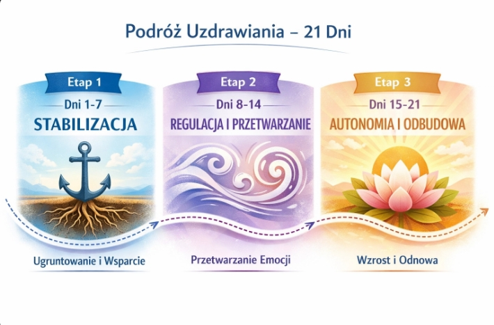
Etap I: Stabilizacja (Dni 1-7)
Skupia się na uspokojeniu układu nerwowego, odzyskaniu poczucia bezpieczeństwa i zaopiekowaniu podstawowych potrzeb, takich jak sen, odżywianie i poczucie stabilności.
Etap II: Regulacja i Przetwarzanie (Dni 8-14)
To czas, gdy zaczynamy pracę z konkretnymi, trudnymi emocjami, takimi jak złość, poczucie winy i wstyd. Uczymy się je zauważać, akceptować i uwalniać w bezpieczny sposób.
Etap III: Autonomia i Odbudowa (Dni 15-21)
Koncentruje się na wzmacnianiu poczucia własnej wartości, stawianiu granic, zamykaniu przeszłości i tworzeniu wizji przyszłości opartej na zdrowych wartościach.
✅ Klucz do sukcesu
Systematyczność. Nawet 15 minut pracy dziennie przyniesie lepsze efekty niż 3-godzinna sesja raz w tygodniu. Bądź dla siebie wyrozumiała lub wyrozumiały – będą dni lepsze i gorsze. To normalne i stanowi część procesu zdrowienia.
Skala SUDs i monitorowanie postępów
Skala SUDs (Subjective Units of Distress) to proste narzędzie do mierzenia intensywności dyskomfortu emocjonalnego lub fizycznego. Używamy jej przed i po każdej sesji EFT, aby ocenić jej skuteczność i monitorować postępy.
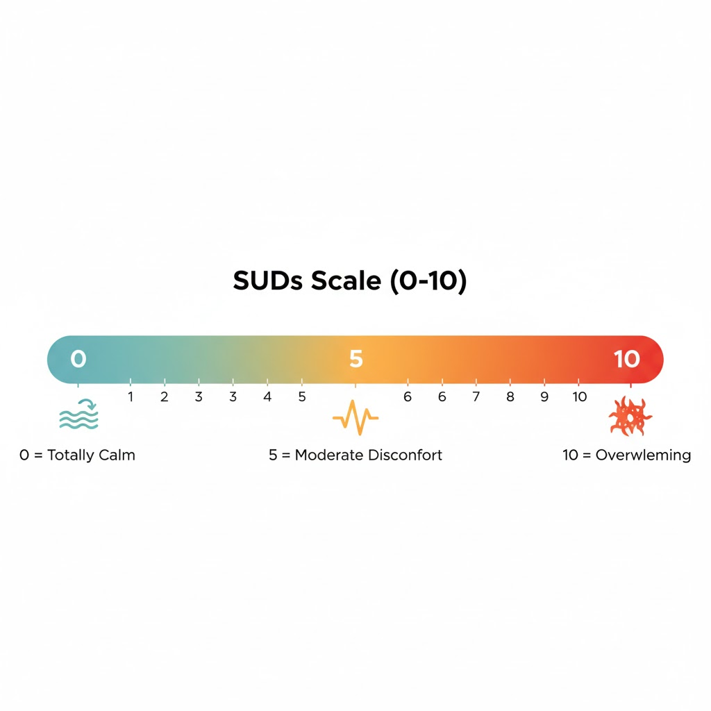
Co oznaczają poszczególne poziomy:
- 0 – Całkowity spokój, brak jakiegokolwiek dyskomfortu
- 1-3 – Lekki dyskomfort, który nie przeszkadza w codziennym funkcjonowaniu
- 4-6 – Umiarkowany dyskomfort, zauważalny i przeszkadzający w koncentracji
- 7-8 – Silny dyskomfort, trudny do zignorowania, wpływający na funkcjonowanie
- 9-10 – Ekstremalny, przytłaczający dyskomfort, panika, poczucie zagrożenia życia
Jak używać skali:
- Przed rozpoczęciem sesji EFT skup się na problemie i zadaj sobie pytanie: "Jak silny jest mój dyskomfort w skali od 0 do 10?". Zapisz tę liczbę.
- Wykonaj rundę EFT.
- Ponownie oceń swój dyskomfort w skali od 0 do 10 i zapisz nową wartość.
💡 Wskazówka
Celem jest obniżenie poziomu SUDs o co najmniej 2-3 punkty. Jeśli poziom nie spada po kilku rundkach, spróbuj być bardziej precyzyjna lub precyzyjny w nazywaniu problemu lub poszukaj tzw. "aspektów".
Przykład: Zamiast ogólnego "smutek", spróbuj "smutek, że zmarnowałam tyle lat" lub "smutek, gdy widzę jego zdjęcie".
Kiedy przerwać ćwiczenia
⚠️ Twoje bezpieczeństwo jest najważniejsze
Przerwij ćwiczenie natychmiast, jeśli wystąpi którakolwiek z poniższych sytuacji.
Przerwij, gdy:
- Poziom SUDs wzrasta i utrzymuje się powyżej 8 przez dłuższy czas
- Czujesz się przytłoczona lub przytłoczony, zalana lub zalany emocjami, które wydają się nie do opanowania
- Doświadczasz silnej dysocjacji, czyli odrealnienia, poczucia bycia poza ciałem, utraty kontaktu z rzeczywistością
- Pojawiają się myśli samobójcze lub o samookaleczeniu
Co robić, gdy przerwiesz ćwiczenie:
1. Ugruntuj się – skup się na ciele
Potup nogami o podłogę, pomasuj dłonie, opłucz twarz zimną wodą, poczuj kontakt z rzeczywistością.
2. Skup się na oddechu
Wydłużaj wydech, na przykład wdech licząc do 4, wydech licząc do 6 lub 8. To aktywuje przywspółczulny układ nerwowy.
3. Przenieś uwagę na zewnątrz
Rozejrzyj się po pokoju i nazwij 5 przedmiotów, które widzisz. To pomaga wrócić do teraźniejszości.
4. Szukaj wsparcia
Skontaktuj się z kimś bliskim lub sięgnij po pomoc specjalistyczną, jeśli stan się nie poprawia w ciągu 15-20 minut.
Jak korzystać z kart pracy (A, B, C)
Karty pracy to Twoje osobiste narzędzia do pogłębienia świadomości i utrwalenia efektów pracy z EFT. W programie 21-dniowym będziesz korzystać z trzech różnych kart, dostosowanych do konkretnych wyzwań.
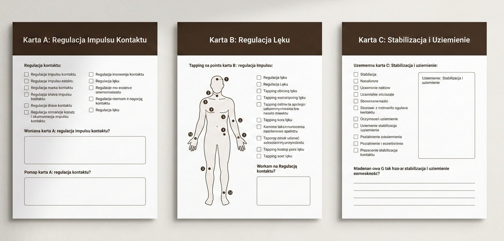
🔴 Karta Pracy A – Regulacja Impulsu Kontaktu
Używaj jej, gdy poczujesz silny impuls do kontaktu z byłym partnerem, sprawdzania jego mediów społecznościowych lub fantazjowania o powrocie. Pomaga zdekonstruować ten impuls i znaleźć zdrowsze sposoby na zaspokojenie potrzeby, która za nim stoi.
🔵 Karta Pracy B – Regulacja Lęku i Napięcia Somatycznego
Służy do obniżenia lęku i napięcia w ciele poprzez regulację układu nerwowego. Pomaga zauważyć, jakie sytuacje wywołują w Tobie trudne emocje i jak sobie z nimi radzisz. To narzędzie do budowania świadomości emocjonalnej.
🟢 Karta Pracy C – Stabilizacja i Uziemienie
To narzędzie do szybkiego przywracania stabilizacji i kontaktu z chwilą obecną. Używaj jej przed sesjami EFT, po silnych emocjach, w sytuacjach kryzysowych lub jako codzienną praktykę regulacyjną.
💡 Jak korzystać
Każdy dzień programu będzie zawierał link do odpowiedniej karty pracy. Karty możesz wypełniać wielokrotnie – są zaprojektowane tak, aby wspierać Cię w konkretnych momentach trudności.
ETAP I: STABILIZACJA (Dni 1-7)
Cel: Uspokojenie układu nerwowego i odzyskanie poczucia bezpieczeństwa.
Dzień 1: Bezpieczna Przystań
Stabilizacja układu nerwowego
Dziś jest pierwszy dzień Twojej nowej drogi. Celem nie jest "pozbycie się" bólu natychmiast, ale stworzenie dla niego bezpiecznego pojemnika. Twój układ nerwowy przez długi czas był w stanie alarmu. Dziś uczymy go, że alarm można wyłączyć. Jesteś tu i teraz. Jesteś bezpieczna lub bezpieczny.
Sesja EFT – Dzień 1
Problem/Setup: "Mimo że czuję chaos i nie wiem, od czego zacząć, głęboko i w pełni akceptuję siebie."
Ten chaos
Ten niepokój
Nie wiem, co robić
Czuję się zagubiona/y
Wybieram poczucie bezpieczeństwa
Jestem tu i teraz
Krok po kroku
📋 Karta Pracy C – Stabilizacja i Uziemienie
Użyj tej karty, gdy potrzebujesz szybkiego powrotu do stabilności.
Technika 5-4-3-2-1:
- 5 rzeczy, które widzisz
- 4 rzeczy, które czujesz dotykiem
- 3 dźwięki, które słyszysz
- 2 zapachy
- 1 rzecz neutralna lub przyjemna

Dzień 2: Szok emocjonalny
Akceptacja reakcji obronnych
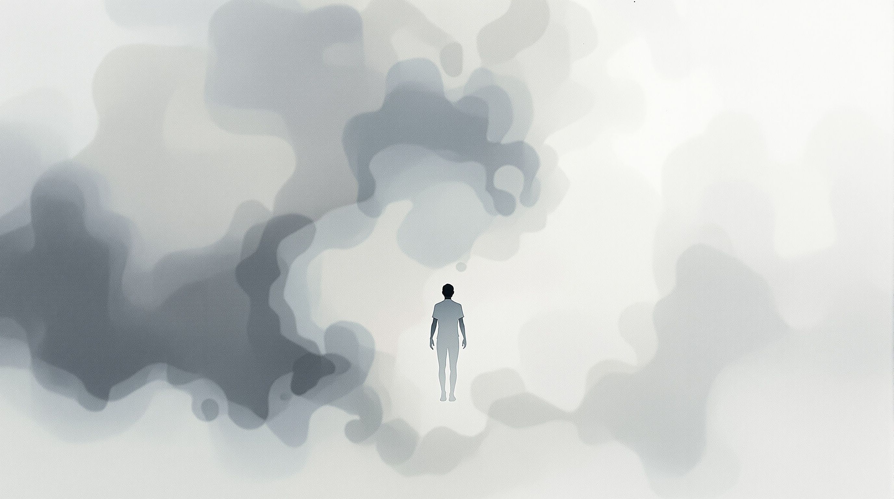
Po zakończeniu związku często przychodzi szok. Niedowierzanie, że to naprawdę koniec. Poczucie odrealnienia, jakby to wszystko działo się komuś innemu. To naturalna reakcja obronna organizmu. Nie walcz z tym stanem. Pozwól mu być, jednocześnie delikatnie kotwicząc się w teraźniejszości.
Sesja EFT – Dzień 2
Setup: "Mimo że jestem w szoku i nie mogę uwierzyć, że to się dzieje, akceptuję wszystkie moje uczucia."
Ten szok
To niedowierzanie
To się nie dzieje naprawdę
Czuję się jak we mgle
Jestem odrętwiała/y
Delikatnie wracam do ciała
Jestem bezpieczna/y w tej chwili
Dzień 3: Poczucie straty
Prawo do żałoby
Za szokiem często podąża głębokie poczucie straty. Straciłaś lub straciłeś nie tylko partnera, ale też wspólną przyszłość, marzenia. To jest żałoba. Daj sobie dziś prawo do smutku. Nie musisz być silna lub silny. Możesz płakać. Twoje łzy oczyszczają i uwalniają napięcie.
Sesja EFT – Dzień 3
Setup: "Mimo że czuję ogromny smutek i poczucie straty, daję sobie prawo do żałoby."
Ten głęboki smutek
Tak bardzo boli
Straciłam/em wszystko
Pustka w sercu
Boję się, że ten ból nie minie
Opłakuję to, co stracone
Otulam się współczuciem

Dzień 4: Chaos myśli
Obserwator umysłu
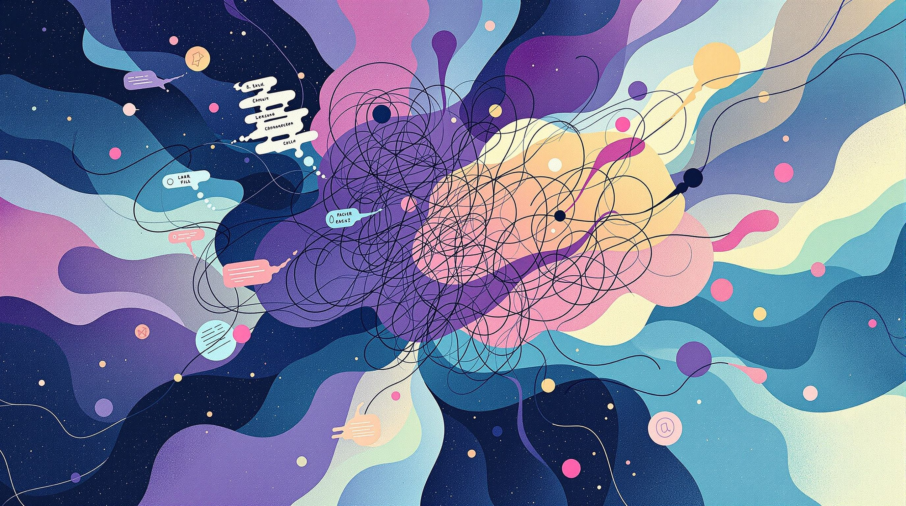
Twój umysł może pracować na najwyższych obrotach, analizując przeszłość bez końca. "Co by było, gdyby…", "Dlaczego?". To ruminacje. Celem nie jest zatrzymanie tych myśli siłą woli, ale zdystansowanie się od nich. Jesteś obserwatorem swoich myśli, a nie ich niewolnikiem.
Sesja EFT – Dzień 4
Setup: "Mimo że w mojej głowie panuje chaos i myśli galopują, wybieram spokój i dystans."
Ten chaos w głowie
Milion myśli na minutę
Analizuję bez końca
Co poszło nie tak?
Nie mogę przestać myśleć
Jestem obserwatorem moich myśli
Wybieram ciszę w głowie
Dzień 5: Lęk i napięcie
Uwolnienie z ciała

Lęk o przyszłość jest naturalny. "Jak sobie poradzę?", "Czy będę sam/a?". Ten lęk manifestuje się w ciele jako napięcie, ucisk w klatce piersiowej. Dziś skupimy się na uwolnieniu tego napięcia z ciała. Twoje ciało jest Twoim sprzymierzeńcem.
Sesja EFT – Dzień 5
Setup: "Mimo że czuję lęk przed przyszłością i napięcie w ciele, jestem bezpieczna/y w tej chwili."
Ten lęk o przyszłość
Napięcie w moim ciele
Ucisk w klatce piersiowej
Co ze mną będzie?
Boję się samotności
W tej chwili jestem bezpieczna/y
Rozluźniam moje ciało
Dzień 6: Bezsenność i wyczerpanie
Przywracanie odpoczynku

Chroniczny stres prowadzi do problemów ze snem, a brak snu potęguje lęk. Dziś przygotujemy Twoje ciało i umysł do odpoczynku. Masz prawo spać spokojnie. Sen jest kluczowy dla regeneracji.
Sesja EFT – Dzień 6
Setup: "Mimo że jestem wyczerpana/y i nie mogę spać, pozwalam sobie na głęboki odpoczynek."
To wyczerpanie
Nie mogę zasnąć
Mój umysł nie chce się wyłączyć
Boję się kolejnej nocy
Potrzebuję regeneracji
Pozwalam mojemu ciału odpocząć
Pozwalam umysłowi się wyciszyć
Dzień 7: Pierwsze poczucie ulgi
Integracja i celebracja
Po tygodniu intensywnej pracy możesz zacząć odczuwać pierwsze przebłyski ulgi. Chwile spokoju. To dowód na to, że Twoja praca przynosi efekty. Dziś integrujemy doświadczenia minionego tygodnia.
Sesja EFT – Dzień 7
Setup: "Mimo że wciąż czuję ból, zauważam i doceniam chwile ulgi i spokoju."
Wciąż czuję ból
Ale pojawia się też ulga
Chwile spokoju
To małe zwycięstwo
Doceniam moją pracę
Integruję ten tydzień
Buduję nowe fundamenty
ETAP II: REGULACJA (Dni 8-14)
Cel: Praca z trudnymi emocjami (złość, wina, wstyd) i detoks emocjonalny.
Dzień 8: Złość
Zdrowe wyrażanie emocji
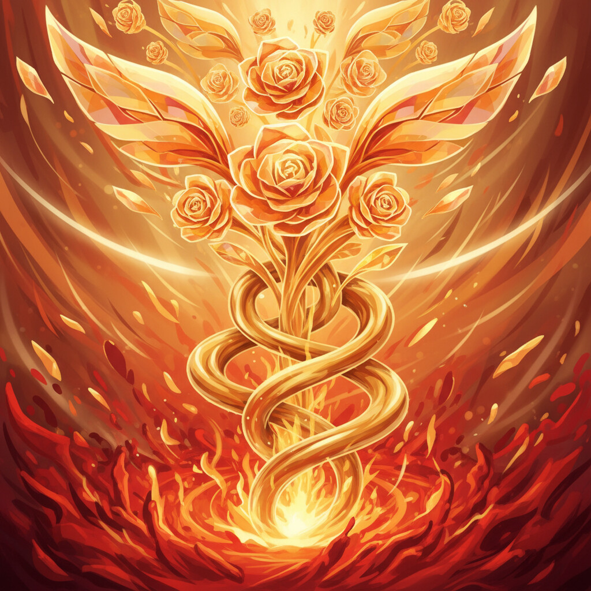
Złość jest zdrową reakcją na przekroczenie granic. To paliwo do zmiany. Często tłumimy ją, bojąc się, że jest "zła". Dziś uczymy się, jak czuć złość w bezpieczny sposób, nie raniąc siebie ani innych.
Sesja EFT – Dzień 8
Setup: "Mimo że czuję ogromną złość, pozwalam sobie ją czuć w bezpieczny sposób."
Ta wściekłość
Jak on/ona mógł/mogła?!
Jestem zła/y na siebie
To niesprawiedliwe
Czuję, że zaraz wybuchnę
Moja złość pokazuje mi granice
Mam prawo czuć złość
Uwalniam tę energię bezpiecznie
Dzień 9: Poczucie winy
Oddzielanie winy od odpowiedzialności
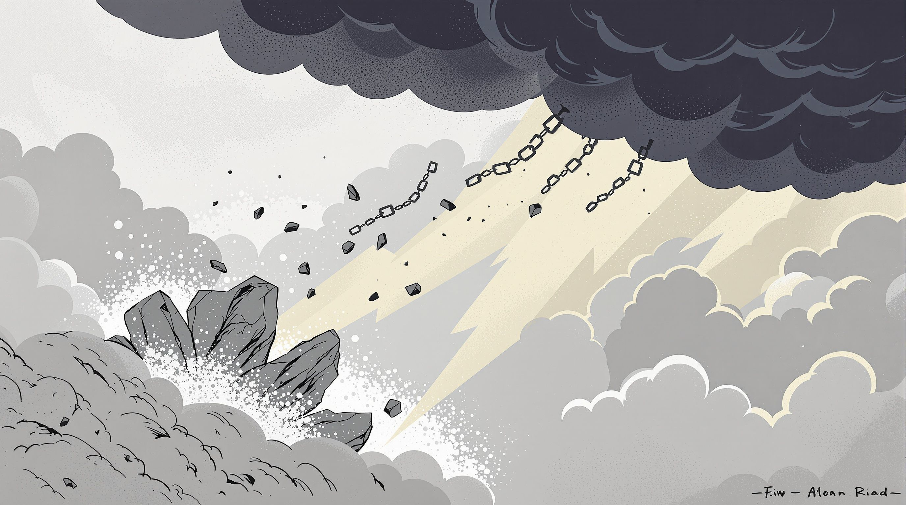
"Może gdybym bardziej się starała...", "To moja wina". Toksyczny partner często obarcza winą ofiarę. Dziś oddzielamy winę od odpowiedzialności. Nie jesteś winna/y temu, że ktoś Cię źle traktował.
Sesja EFT – Dzień 9
Setup: "Mimo że czuję poczucie winy, otwieram się na możliwość, że to nie jest moja wina."
To poczucie winy
Ciągle się obwiniam
Co zrobiłam/em nie tak?
On/ona mówił/a, że to moja wina
Oddzielam winę od odpowiedzialności
Zrobiłam/em najlepiej jak umiałam/em
Wybaczam sobie

Dzień 10: Wstyd
Wydobycie na światło
Wstyd to uczucie, że "coś jest ze mną nie tak". Wstyd izoluje i odbiera siłę. Dziś wyciągamy wstyd na światło dzienne. Kiedy mówimy o wstydzie, traci on swoją moc. Nie jesteś sama/sam.
Sesja EFT – Dzień 10
Setup: "Mimo że czuję głęboki wstyd, jestem wartościową osobą."
Ten okropny wstyd
Co jest ze mną nie tak?
Jestem taka/i głupia/i
Chcę się schować
Ten wstyd mnie paraliżuje
Moja wartość nie zależy od opinii
Zasługuję na szacunek
Dzień 11: Uzależnienie emocjonalne
Początek odwyku
Czujesz, że nie możesz bez niego/niej żyć? To nie miłość, to uzależnienie biochemiczne od cyklu "napięcie-nagroda". Twój mózg domaga się dawki. Dziś zaczynamy odwyk.
Sesja EFT – Dzień 11
Setup: "Mimo że czuję, że jestem uzależniona/y od niego/niej, odzyskuję swoją wolność."
Czuję się uzależniona/y
Nie mogę bez niego żyć
Ta obsesyjna tęsknota
To jak głód
To silniejsze ode mnie
Jestem kompletna/y sama/sam
Odzyskuję swoją siłę
Dzień 12: Idealizacja partnera
Realistyczny obraz
Umysł ma tendencję do zapominania złych chwil i pamiętania tylko tych dobrych. To pułapka. Dziś tworzymy realistyczny obraz. On/ona nie był aniołem.
Sesja EFT – Dzień 12
Setup: "Mimo że idealizuję go/ją i pamiętam tylko dobre chwile, otwieram się na całą prawdę."
Pamiętam tylko dobre chwile
Było też tak pięknie
Zapominam o bólu
Ta iluzja jest kusząca
Pamiętam też te złe chwile
Widzę cały obraz
Prawda mnie uwalnia
Dzień 13: Samotność
Bycie ze sobą
Samotność a bycie samemu to nie to samo. Dziś uczymy się, jak być ze sobą w pojedynkę, nie czując się opuszczonym. Jesteś swoim najlepszym towarzyszem.
Sesja EFT – Dzień 13
Setup: "Mimo że czuję się przeraźliwie samotna/y, uczę się być swoim najlepszym przyjacielem."
Ta okropna samotność
Pustka w domu
Boję się ciszy
Nikt mnie nie rozumie
Uczę się cieszyć sobą
W ciszy słyszę siebie
Wypełniam pustkę miłością
Dzień 14: Integracja emocji
Pomieścić całość
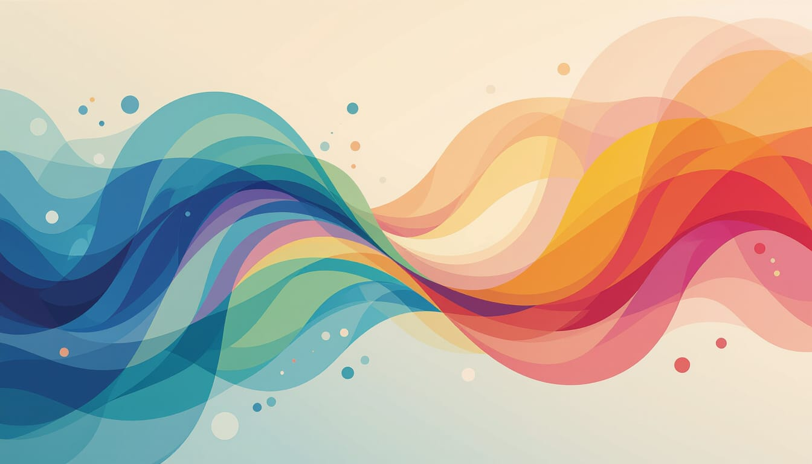
Minione dwa tygodnie były intensywne. Dziś integrujemy. Zauważ, że potrafisz pomieścić w sobie sprzeczne uczucia: smutek i ulgę, złość i tęsknotę. Jesteś jak niebo, które mieści wszystko.
Sesja EFT – Dzień 14
Setup: "Mimo że czuję w sobie wiele różnych emocji, akceptuję je wszystkie."
Tyle różnych emocji
Smutek i ulga
Złość i tęsknota
Czuję się rozdarta/y
Integruję ten tydzień
Wszystkie emocje są OK
Dziękuję sobie za tę pracę
ETAP III: AUTONOMIA I ODBUDOWA (Dni 15-21)
Cel: Odbudowa poczucia własnej wartości, stawianie granic i zamknięcie przeszłości.
Dzień 15: Impuls kontaktu
Test determinacji
Pojawia się nagła chęć, by napisać SMS. To jeden z najtrudniejszych momentów. To test Twojej determinacji. Każde "nie" dla niego/niej jest "tak" dla Ciebie. Wytrzymaj.
Sesja EFT – Dzień 15
Setup: "Mimo że czuję przemożną chęć kontaktu, wybieram siebie i swoje zdrowie."
Muszę napisać
Tylko jedno słowo
To silniejsze ode mnie
Walczę ze sobą
Ten impuls jest silny
Mówię TAK dla siebie
Wybieram wolność
Dzień 16: Fantazje o powrocie
Konfrontacja z rzeczywistością
Twój umysł tworzy scenariusze: on wraca, przeprasza, wszystko się zmienia. To fantazje, które dają ulgę, ale trzymają w pułapce. Dziś konfrontujemy te iluzje. Pamiętasz, jak było naprawdę?
Sesja EFT – Dzień 16
Setup: "Mimo że uciekam w fantazje o powrocie, wybieram życie w rzeczywistości."
Te piękne fantazje
On/ona wraca
Chcę w to wierzyć
Uciekam od bólu w iluzje
Rozbrajam tę iluzję
Wybieram rzeczywistość
Zasługuję na prawdę
Dzień 17: Poczucie własnej wartości
Odbudowa fundamentów
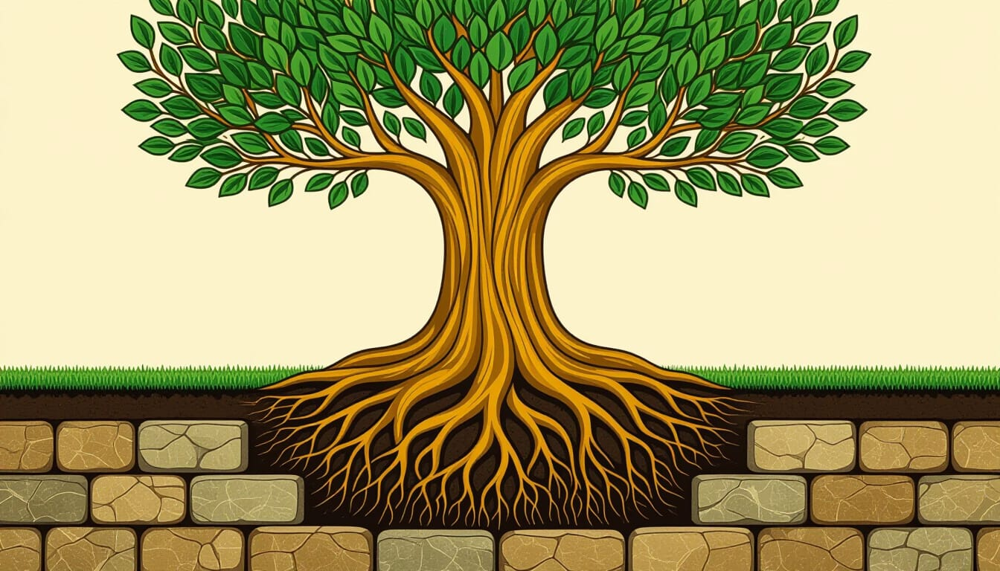
Toksyczny związek niszczy wiarę w siebie. Dziś zaczynamy odbudowę. Twoja wartość jest bezwarunkowa. Nie zależy od tego, czy ktoś Cię kocha. Istniejesz, więc jesteś wartościowa/y.
Sesja EFT – Dzień 17
Setup: "Mimo że moje poczucie wartości zostało zniszczone, zaczynam je odbudowywać."
Czuję się bezwartościowa/y
On sprawił, że tak się czuję
Nikt mnie nie zechce
Czuję się mała/y
Odbudowuję moją wartość
Moja wartość jest we mnie
Zasługuję na miłość
Dzień 18: Granice
Ochrona własnego terytorium
Granice to nie mury, które izolują. To płot, który chroni Twój ogród. Masz prawo mówić "nie" i chronić swoją energię. Dziś uczymy się stawiać granice z miłości do siebie.
Sesja EFT – Dzień 18
Setup: "Mimo że boję się stawiać granice, uczę się mówić NIE z miłością do siebie."
Boję się mówić NIE
Nie chcę nikogo urazić
Moje potrzeby są ważne
Zawsze ustępowałam/em
Uczę się stawiać granice
Moje NIE jest ważne
Chronię swoją energię
Dzień 19: Zamknięcie emocjonalne
Ostatni rozdział

Często czekamy na wyjaśnienia od drugiej osoby. Ale prawdziwe zamknięcie to proces wewnętrzny. To Twoja decyzja, że historia jest skończona. Ty piszesz ostatni rozdział. Zamykamy te drzwi.
Sesja EFT – Dzień 19
Setup: "Mimo że część mnie wciąż czeka na wyjaśnienia, daję sobie zamknięcie sama/sam."
Czekam na wyjaśnienia
Bez tego nie mogę ruszyć
Oddaję mu/jej władzę
Biorę sprawy w swoje ręce
Zamykam te drzwi
Ta historia jest skończona
Jestem wolna/y
Dzień 20: Nowa tożsamość
Odkrywanie siebie na nowo
Kim jesteś bez niego/niej? Twoja tożsamość była spleciona ze związkiem. Dziś pytamy: "Co ja lubię? O czym marzę?". Odkrywanie siebie na nowo to ekscytujący proces.
Sesja EFT – Dzień 20
Setup: "Mimo że nie wiem, kim jestem bez niego/niej, z ciekawością odkrywam siebie."
Nie wiem kim jestem
Straciłam siebie w związku
Kim jestem teraz?
Czuję pustkę
Odkrywam siebie na nowo
Jestem ciekawa siebie
Zakochuję się w sobie
Dzień 21: Integracja i dalsza droga
Kamień milowy
Dotarłaś do końca programu. Gratulacje! To ogromne osiągnięcie. To nie koniec uzdrawiania, ale ważny kamień milowy. Masz w sobie siłę i narzędzia, by iść dalej. Twoja przyszłość należy do Ciebie.
Sesja EFT – Dzień 21
Setup: "Doceniam całą drogę, którą przeszłam i jestem gotowa na kolejny rozdział."
Dotarłam do końca
To było trudne
Ale to zrobiłam
Jestem z siebie dumna/y
Mam narzędzia
Jestem silniejsza/y
Idę naprzód z nadzieją
Jak wracać do programu po zakończeniu
Ten program to nie jednorazowe wydarzenie, ale zestaw narzędzi na całe życie. Możesz i powinnaś lub powinieneś do niego wracać w różnych momentach swojej drogi.
Gdy poczujesz się gorzej
Wróć do dni, które dotyczą Twojego aktualnego problemu. Na przykład:
- Wróć do Dnia 15, gdy poczujesz impuls kontaktu
- Wróć do Dnia 10, gdy pojawi się wstyd
- Wróć do Dnia 5, gdy lęk stanie się przytłaczający
- Wróć do Dnia 8, gdy złość będzie potrzebowała wyrażenia
Jako regularną higienę emocjonalną
Wybierz jedną sesję EFT w tygodniu, która najbardziej z Tobą rezonuje i wykonuj ją profilaktycznie, nawet gdy czujesz się dobrze. To jak szczotkowanie zębów – zapobiega problemom, zanim się pojawią.
Dla pogłębiania pracy
Wróć do kart pracy po miesiącu lub dwóch i zobacz, co się zmieniło. Twoje odpowiedzi mogą Cię zaskoczyć i pokazać, jak bardzo się rozwinęłaś lub rozwinąłeś.
💡 Wskazówka
Prowadź dziennik swojej pracy z programem. Zapisuj poziomy SUDs, obserwacje, przełomy. Po kilku miesiącach będziesz miała lub miał namacalny dowód swoich postępów.
FAQ – Najczęstsze pytania i trudności
❓ "EFT na mnie nie działa, poziom SUDs nie spada."
Spróbuj być bardziej precyzyjna lub precyzyjny. Zamiast ogólnego "smutek", opukuj "ten ciężar w klatce piersiowej, gdy myślę o naszym ostatnim spotkaniu". Szukaj konkretnych aspektów, wspomnień, odczuć w ciele. Czasem jeden problem ma wiele warstw i trzeba je opukiwać kolejno.
❓ "Boję się, że jak zacznę płakać, to nigdy nie przestanę."
To częsta obawa. Płacz to naturalny mechanizm uwalniania emocji i napięcia. Zaufaj, że Twoje ciało wie, co robi. Płacz zawsze się kończy. Miej przy sobie szklankę wody i chusteczki. Pozwól sobie na ten proces.
❓ "Nic nie czuję, jestem odrętwiała lub odrętniały."
To też jest informacja i forma ochrony. Opukuj: "Mimo że nic nie czuję i jestem odrętniała/y, akceptuję siebie". Czasem odrętwienie jest pancerzem, który chroni przed zbyt silnym bólem. Bądź dla siebie cierpliwa lub cierpliwy. Uczucia wrócą, gdy będzie bezpiecznie.
❓ "Ile razy dziennie mogę robić EFT?"
EFT możesz stosować tak często, jak potrzebujesz – nie ma limitu. Niektórzy robią jedną sesję dziennie, inni kilka w momentach trudności. Słuchaj swojego ciała i intuicji.
❓ "Co jeśli przegapię dzień w programie?"
To w porządku! Życie się dzieje. Po prostu wróć do programu następnego dnia. Nie ma potrzeby zaczynać od początku. Program jest elastyczny – możesz go dostosować do swojego tempa.
❓ "Czy mogę robić więcej niż jeden dzień naraz?"
Nie zalecamy. Każdy dzień został zaprojektowany tak, aby dać Ci czas na integrację doświadczeń. Zbyt szybkie tempo może być przytłaczające dla układu nerwowego. Bądź cierpliwa lub cierpliwy.
❓ "Po sesji EFT czuję się gorzej. Czy to normalne?"
Czasem po sesji mogą pojawić się silniejsze emocje – to znak, że dotknęłaś lub dotknąłeś ważnego tematu. Jeśli poziom SUDs wzrasta powyżej 8 i utrzymuje się tam, przerwij pracę i użyj Karty C (Stabilizacja). Wróć do tej sesji później, może z mniejszą intensywnością lub z terapeutą.
❓ "Czy EFT może zastąpić terapię?"
Nie. EFT to wspaniałe narzędzie samopomocowe, ale nie zastępuje profesjonalnej psychoterapii, zwłaszcza w przypadku złożonej traumy (C-PTSD), depresji klinicznej lub innych zaburzeń psychicznych. Traktuj ten program jako uzupełnienie pracy z terapeutą.
❓ "Wciąż myślę o byłym partnerze. Czy to znaczy, że program nie działa?"
Nie. Myślenie o byłym partnerze jest naturalne i nie zniknie z dnia na dzień. Program działa, jeśli zauważasz, że: myśli stają się mniej natręte, pojawiają się chwile spokoju, poziom emocjonalnego ładunku zmniejsza się, masz więcej kontroli nad impulsami.
❓ "Nie pamiętam wszystkich punktów tappingowych. Co robić?"
Na początku możesz korzystać z diagramu w ebooku lub wydrukować go i trzymać przy sobie. Z czasem zapamietasz punkty automatycznie. Możesz też skupić się tylko na kilku głównych punktach (brwi, pod okiem, obojczyk, punkt karate) – to też działa!
❓ "Jak długo potrwa moje uzdrawianie?"
To bardzo indywidualne i zależy od wielu czynników: długości i intensywności toksycznego związku, Twojej historii traumy, obecnego wsparcia, systematyczności pracy. Niektórzy czują znaczącą ulgę po kilku tygodniach, inni potrzebują miesięcy. Nie ma "właściwego" tempa.
❓ "Co jeśli po programie wciąż czuję impuls do kontaktu?"
Impuls kontaktu może pojawiać się jeszcze przez długi czas, zwłaszcza w momentach stresu czy samotności. Każdorazowo korzystaj z Karty A. Z czasem impulsy będą słabsze i rzadsze. To proces, nie wydarzenie jednorazowe.
❓ "Czy mogę wykonywać EFT za partnera/dla niego?"
Nie. EFT to osobista praktyka. Nie możesz zrobić pracy emocjonalnej za kogoś innego. Możesz pokazać technikę, podzielić się zasobami, ale ostatecznie każdy musi pracować nad sobą sam.
❓ "Skończyłam/em program, ale wciąż mam trudne dni. Czy to znaczy, że nie zadziałało?"
Absolutnie nie! Zdrowienie nie jest liniowe. Będą lepsze i gorsze dni. Program dał Ci narzędzia i umiejętności do radzenia sobie z trudnymi momentami. To, że wciąż się pojawiają, jest normalne. Ważne jest to, jak sobie z nimi radzisz.
❓ "Czy mogę stosować EFT do innych problemów, nie tylko związanych ze związkiem?"
Tak! EFT jest uniwersalną techniką, którą możesz stosować do lęku, stresu, fobii, bólu fizycznego, blokad emocjonalnych i wielu innych problemów. Po opanowaniu podstaw możesz dostosować frazy do dowolnego wyzwania.
❓ "Mój były partner chce wrócić. Co mam robić?"
Ten program nie jest po to, aby podjąć za Ciebie decyzję. Jest po to, aby pomóc Ci odzyskać równowagę emocjonalną i jasność myślenia. Zanim podejmiesz jakąkolwiek decyzję: dokończ program, porozmawiaj z terapeutą, zapisz listę tego, co było toksyczne w związku i przeczytaj ją, gdy pojawi się impuls powrotu, zapytaj siebie: "Czy ta osoba naprawdę się zmieniła, czy tylko obiecuje zmianę?"
❓ "Czy mogę polecić ten program komuś, kto jest wciąż w toksycznym związku?"
Program jest zaprojektowany dla osób, które już zakończyły związek. Dla osób wciąż w toksycznej relacji priorytetem powinna być ewakuacja i zapewnienie bezpieczeństwa, a dopiero potem praca z emocjami. Jeśli ktoś jest w niebezpieczeństwie, pomóż mu znaleźć ośrodek wsparcia dla ofiar przemocy.
❓ "Jak długo muszę czekać, zanim zacznę nowy związek?"
Nie ma uniwersalnej odpowiedzi. Jednak ważne sygnały, że jesteś gotowa lub gotowy to: potrafisz być sama/sam bez poczucia desperacji, nie szukasz partnera, aby "zapełnić pustkę", znasz swoje granice i jesteś gotowa/y je bronić, zakończyłaś/eś proces żałoby po poprzednim związku, rozumiesz, jakie były wzorce toksyczności i potrafisz je rozpoznać.
❓ "Zauważyłam/em, że powtarzam te same wzorce w nowych relacjach. Co robić?"
To bardzo ważna obserwacja! To znak, że potrzebujesz głębszej pracy nad wzorcami relacyjnymi, prawdopodobnie z terapeutą specjalizującym się w traumie przywiązania. Program EFT może wspierać tę pracę, ale nie zastąpi analizy korzeni tych wzorców.
❓ "Czy powinienem/powinnam powiedzieć byłemu partnerowi, że robię ten program?"
Nie. Twoja praca nad sobą jest tylko Twoja. Nie potrzebujesz zgody, aprobaty ani wiedzy byłego partnera. W rzeczywistości, utrzymywanie dystansu i braku kontaktu jest kluczowe dla Twojego zdrowienia.
Dodatkowe formy wsparcia
🧠 Psychoterapia
Znalezienie dobrego terapeuty specjalizującego się w traumie relacyjnej jest bezcenne. Szukaj terapeutów pracujących metodami takimi jak:
- EMDR (Eye Movement Desensitization and Reprocessing)
- Terapia skoncentrowana na traumie (Trauma-Focused Therapy)
- Terapia schematów (Schema Therapy)
- IFS (Internal Family Systems)
- Terapia przywiązania (Attachment-Based Therapy)
👥 Grupy wsparcia
Poszukaj grup dla osób po toksycznych związkach online lub stacjonarnie. Dzielenie się doświadczeniami z innymi, którzy przeszli przez podobne sytuacje, może być niezwykle uzdrawiające. Nie jesteś sama lub sam.
💡 Gdzie szukać
Szukaj w mediach społecznościowych (grupy na Facebooku), na forach internetowych, w lokalnych ośrodkach wsparcia psychologicznego, w fundacjach zajmujących się przemocą w rodzinie.
🧘 Praca z ciałem
Trauma mieszka w ciele. Praktyki somatyczne mogą wspierać proces uzdrawiania:
- Joga traumy (Trauma-Sensitive Yoga)
- Taniec autentyczny lub terapia tańcem
- Somatic Experiencing
- Tai Chi / Qigong
- Masaż terapeutyczny
- Breathwork (techniki oddechowe)
📚 Edukacja
Im więcej rozumiesz o traumie relacyjnej, tym bardziej się wzmacniasz. Polecane zasoby znajdziesz w sekcji Bibliografia poniżej.
🆘 W sytuacjach kryzysowych
⚠️ Pilna pomoc
Niebieska Linia: 800 120 002 (całodobowo, dla osób doświadczających przemocy domowej)
Telefon zaufania dla dorosłych: 116 123
Telefon zaufania dla dzieci i młodzieży: 116 111
Pogotowie Ratunkowe: 999 lub 112
Bibliografia i źródła naukowe
Książki o traumie i EFT:
- Dawson Church – "The Genie in Your Genes: Epigenetic Medicine and the New Biology of Intention"
- Peta Stapleton – "The Science Behind Tapping: A Proven Stress Management Technique for the Mind and Body"
- Stephen Porges – "The Polyvagal Theory: Neurophysiological Foundations of Emotions, Attachment, Communication, and Self-regulation"
- Bessel van der Kolk – "The Body Keeps the Score: Brain, Mind, and Body in the Healing of Trauma" (polskie tłumaczenie: "Strach zapisany w ciele")
- Patrick Carnes – "The Betrayal Bond: Breaking Free of Exploitive Relationships"
- Pete Walker – "Complex PTSD: From Surviving to Thriving"
- Lundy Bancroft – "Why Does He Do That? Inside the Minds of Angry and Controlling Men"
- Susan Forward – "Toxic Parents" oraz "Emotional Blackmail"
Artykuły naukowe i badania:
- Church, D., et al. (2012). "Psychological trauma symptom improvement in veterans using emotional freedom techniques" – badanie skuteczności EFT w leczeniu PTSD
- Feinstein, D. (2012). "Acupoint stimulation in treating psychological disorders: Evidence of efficacy" – przegląd badań nad psychologią energetyczną
- Sebastian, A., et al. (2019). "The efficacy of Emotional Freedom Techniques in the treatment of posttraumatic stress disorder: A meta-analysis" – metaanaliza skuteczności EFT
Zasoby online:
- EFT International – oficjalna organizacja zrzeszająca praktyków EFT na świecie
- The Tapping Solution – aplikacja i strona z zasobami EFT
- National Domestic Violence Hotline – zasoby dla ofiar przemocy domowej
Słowo końcowe do Czytelnika
Droga Czytelniczko, Drogi Czytelniku,
Dziękuję Ci za zaufanie i odwagę, by wyruszyć w tę podróż. Dotarcie do tego miejsca to dowód Twojej siły i determinacji. Pamiętaj, że uzdrowienie to nie linia prosta, ale spirala. Będą momenty powrotu do starych wzorców, ale za każdym razem będziesz wracać na wyższy poziom świadomości i siły.
Jesteś autorką lub autorem swojego życia. Weź długopis i zacznij pisać nowy, piękny rozdział. Rozdział, w którym Ty jesteś główną bohaterką lub głównym bohaterem. Rozdział pełen szacunku do siebie, zdrowych granic i autentycznej miłości.
Twoja przeszłość nie definiuje Twojej przyszłości. To, co przeżyłaś lub przeżyłeś, nauczyło Cię, jak rozpoznawać toksyczność i jak chronić swoje serce. Teraz masz narzędzia, wiedzę i siłę, by nigdy więcej nie pozwolić nikomu przekroczyć Twoich granic.
Pamiętaj:
- Zasługujesz na miłość, która nie boli
- Na związek, który Cię buduje, a nie niszczy
- Na partnera, który Cię szanuje, a nie upokarza
- I przede wszystkim – zasługujesz na własną miłość, akceptację i współczucie
Idź teraz i twórz życie, o którym marzysz.
Jesteś gotowa. Jesteś gotowy.
Z serca,
Magdalena Iskra

© 2026 Magdalena Iskra. Wszelkie prawa zastrzeżone. © 2026 Zredagowany i złożony przez Kamil Skomra [HardbanRecords Lab]. Wszystkie prawa zastrzeżone.
Ebook powstał z miłością i troską o osoby przechodzące przez trudne doświadczenia relacyjne.